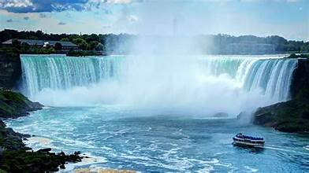
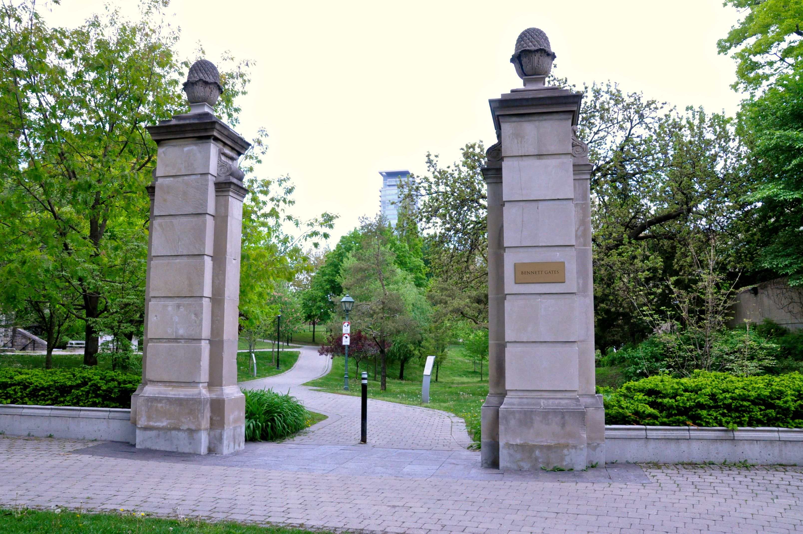
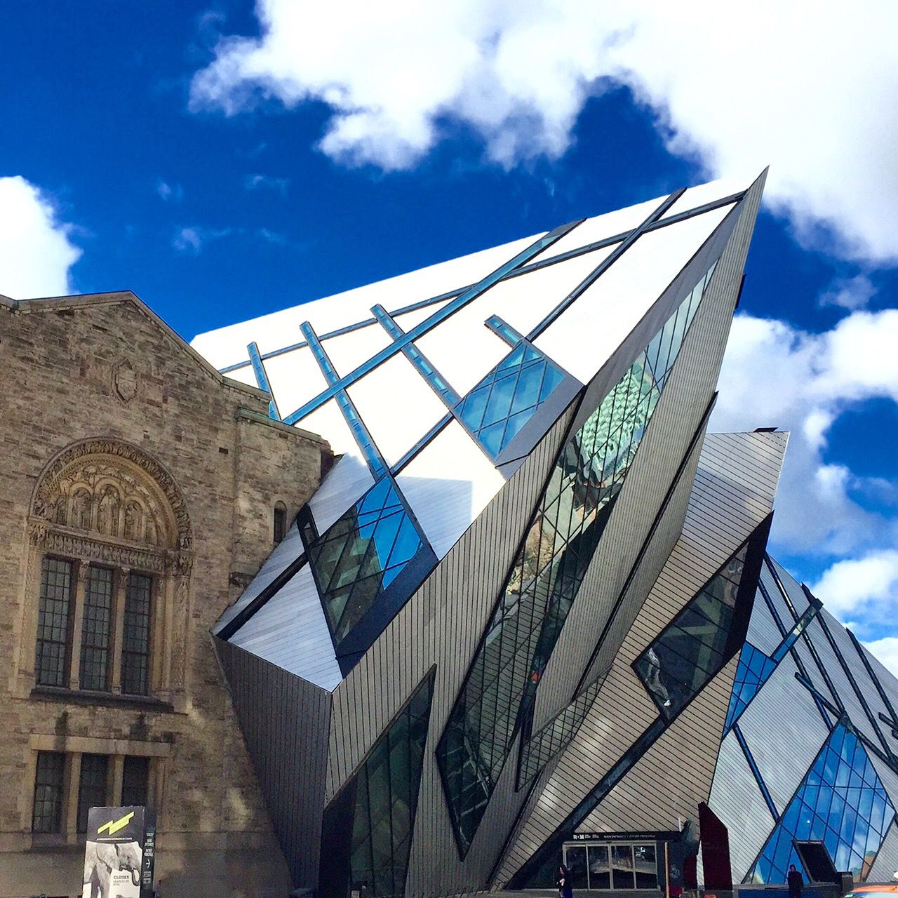
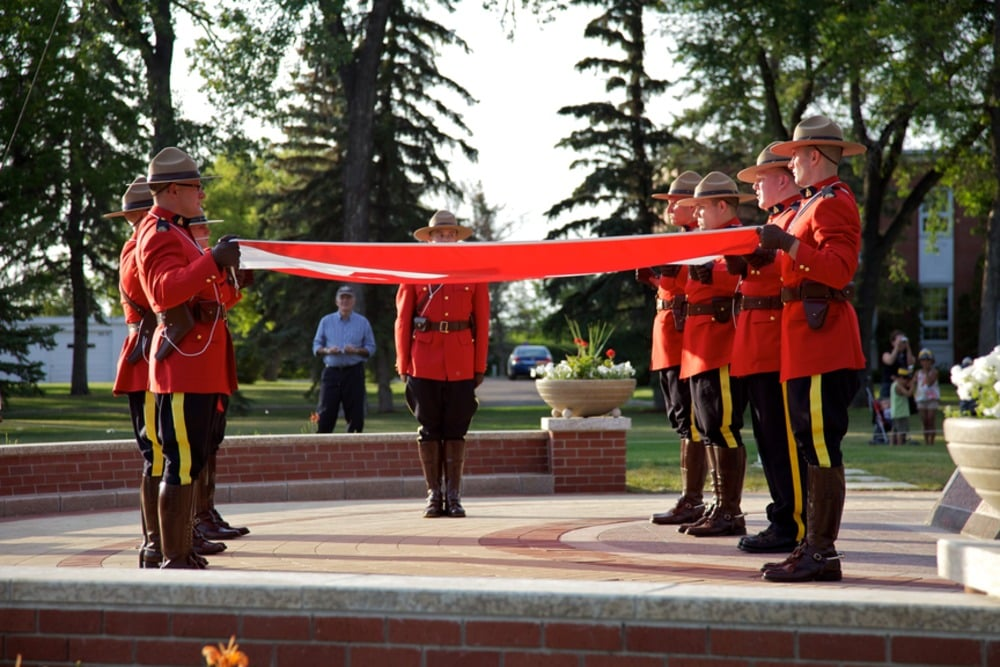
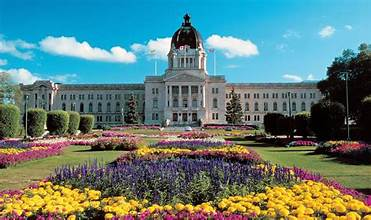
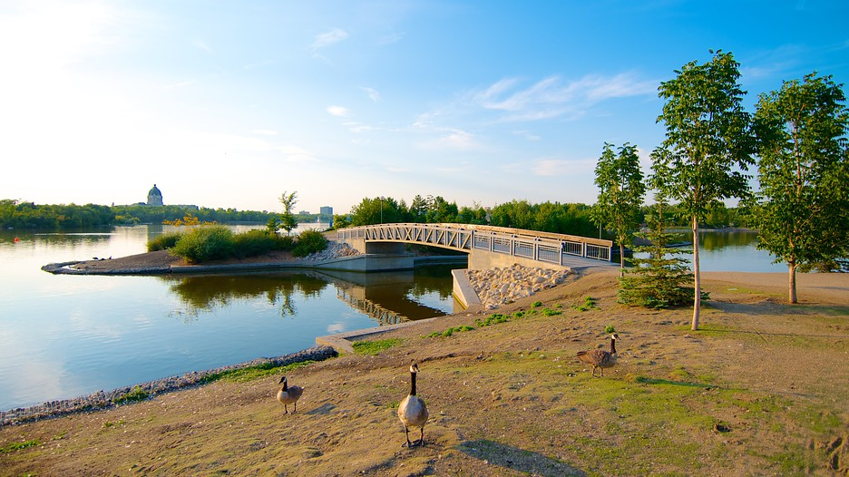
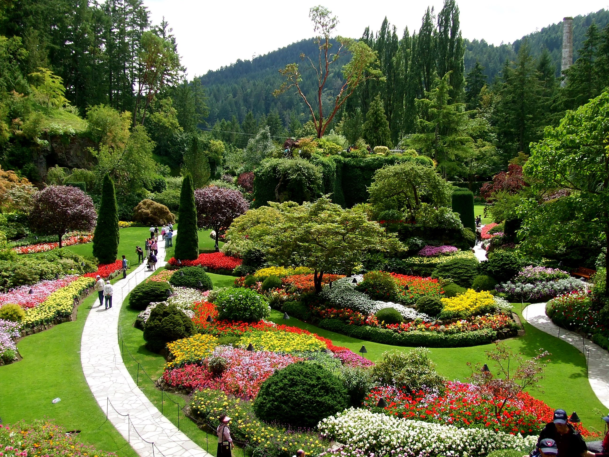
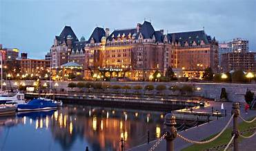

TOP TOURIST SPOT IN CANADA
TORONTO CANADA
Niagara Falls
If you haven't ticked Niagara Falls off your bucket list yet, you can't leave Toronto without taking a day trip to the magnificent waterfall, which is about 80 miles south on the other side of Lake Ontario. Around the main waterfall, there is plenty to do in town, whether you want to hit the casinos or go shopping. If the weather's right, consider taking a boat ride to get up close and personal with the waterfall's misty spray or enjoy the view from a distance at a restaurant with a view like Top of the Falls or Fallsview Dining.

Philosopher's Walk
At the University of Toronto, the Philosopher's Walk is a scenic footpath that will take you past some of the city's cultural landmarks like the Royal Ontario Museum, Royal Conservatory of Music, and Trinity College. Here, you'll also find the Queen Alexandra Gateway, built in 1906. With students bustling about, it's a great place to enjoy Toronto's academic atmosphere and get away from the crowds of tourists in the city's other popular hotspots. You'll find historical memorial plaques and a book quote on every bench along the path.

Royal Ontario Museum
Canada’s largest museum showcases everything from art and archaeology to natural science in over 30 galleries. Whether you’re interested in ancient Rome, Chinese temple art, dinosaurs, or Japanese culture (to name but a few), something at the Royal Ontario Museum will likely pique your interest.

REGINA,SASKATCHEWAN CANADA
RCMP Heritage Centre
This heritage center is dedicated to the history and evolution of the very first police force of Canada. The North West Mounted Police was established in 1873. It is one of the best places to visit in Regina if you are interested in crime history. The exhibits include photographs, weapons, uniforms, vehicles, crime stories, and so on. The center also has interactive exhibits, entertainment, and other fun things to do in Regina, SK. These include a police car simulation, an augmented reality experience, and more. You will need about an hour to tour this place.

Saskatchewan Legislative Building
Built between 1908 and 1912, this government building looks like a palace. It is known for its elaborate architecture, Copper Dome, and Tyndall limestone exterior. It is one of the most marvelous things to see in Regina, Saskatchewan. The complex also includes the Queen Elizabeth II gardens. The interior of the building features detailed marblework brought from Cyprus and Italy. You can stroll these gardens and enjoy the green spaces and see statues of historical figures. This garden also has the Trafalgar Fountain, which used to stand in London before it was brought here. You will need 30 to 45 minutes from Regina sightseeing to tour this building and its complex.

Wascana park
This park is built around Wascana Lake and is the largest park in the city. People visit this park for a variety of outdoor activities to do in Regina. The park has walking trails, green spaces, sports facilities, nature trails, picnic spots, and biking trails. You can also get kayaks and canoes to explore the lake. The park also has ferry rides to tour the lake. You can easily spend a couple of hours in exploring this park.

VICTORIA CANADA
The Butchart Gardens
Although the garden is a short drive from downtown Victoria, it is one of the premier tourist attractions in the area and worth taking the time to see. It's also a place you can visit several times a year to see the changes throughout the seasons. Even in winter, the gardens are a lovely sight, with an outdoor skating rink and a fabulous display of lights around Christmas.
The garden was started in 1904 by Jennie Butchart, wife of a wealthy quarry owner. She laid out a fragrant garden in this abandoned limestone quarry. Flourishing, not least because of the mild climate, the gardens have since been developed into a 20-hectare horticultural tour de force without rival in Canada.
The Italian garden, rose garden, Japanese garden, and sunken garden are among the loveliest. Open spaces among the pools, fountains, and the many exotic plants are used for artistic and musical performances.
To reach The Butchart Gardens, follow Highway 17A north for 22 kilometers to Brentwood Bay on the Saanich Peninsula.

Fairmont Empress Hotel
Built in 1908 for Canadian Pacific, like the Château Frontenac in Québec City, the Fairmont Empress Hotel on the Inner Harbour is one of Victoria's best-loved landmarks. This historic hotel has hosted celebrities and famous people throughout the decades, including members of the British Monarchy.
Architect Francis M. Rattenbury designed the Empress, and entering the vast lobby of this luxurious hotel is like journeying back in time to before the First World War.
Enjoying Afternoon Tea, served with great style in the Lobby Lounge, is one of the most popular things to do if you are visiting the city. Be sure to make a reservation if you want to guarantee a spot.
An extension on the north side of the Empress Hotel houses a collection of several dozen scenes in miniature at Miniature World. The models of historical events, castles, and dollhouses captivate young and old alike.

Parliament Buildings
Dominating the south side of the Inner Harbour is the imposing seat of British Columbia's provincial government, the Parliament Buildings. Designed by Yorkshire architect Francis M. Rattenbury and erected in 1897, the imposing stone buildings have neat, orderly gardens and are very attractive in appearance – especially in the evening when lit by festoons of lights.
Perched high above the massive dome is a gilded statue of Captain George Vancouver (1757-98), who accomplished the first circumnavigation of Vancouver Island. Figures of famous personalities from the province embellish the façade. A large statue of Queen Victoria surveys the Inner Harbour from the terrace.

BACK